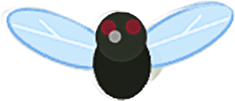

"발버둥 칠 수록 옥죈다."
게임 방법
 1. 파리지옥의 냄새 입자 때문에 파리가 파리지옥 쪽으로 끌려간다.

🌪️ 2. 도망치려고 발버둥 칠 수록 흡인력이 강해진다. 하지만 획득 점수 배율도 높아진다.
🌸 3. 파리에 다가오는 냄새 입자를 천천히 피해다니며 먹이를 먹는다. 입자에 닿는 순간 즉시 사망한다.
🍯 4. 파리지옥에 갇히지 않고 30초 동안 버티면 생존에 성공한다.
발버둥은 단지 덫의 감각모를 자극해 턱을 더 잔인하게 닫히게 할 뿐이었습니다.